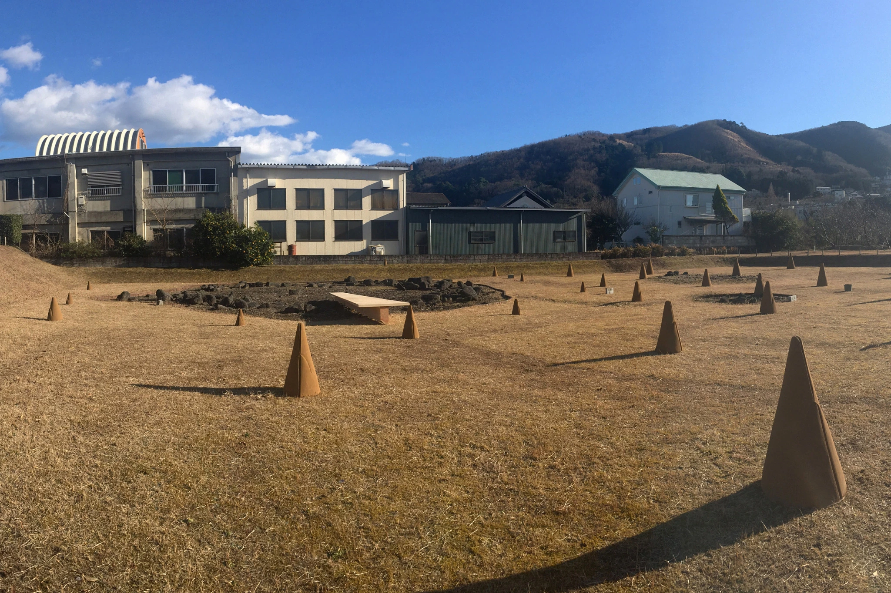

I am Her — Day 1
Watch on YouTube ↗February 27, 2021, 18:00–18:30 / Omiya Shrine
Dai Matsuoka

The Vibrant Mountains and Rivers (2021) was held across three sites in the upper Omi River basin: Izu City Museum, Kamishiraiwa Archaeological Site, and Omiya Shrine. Extending the timeline from the 1958 Kanogawa Typhoon back to the Kawagodaira eruption roughly 3,200 years ago, four participating groups re-read different temporal layers of the same land: disaster, personal history, Jomon ritual, shrine landscape, and volcanic time. The typhoon destroyed Shiraiwa Onsen, and the effort to recover the hot spring led to the invitation of Nakaizu Onsen Hospital—a history that also intersected with the family history of artist Ryo Shimizu.
At Izu City Museum, Ryo Shimizu, Takuya Isomura, and Masahiko Ito created a video installation in which Shimizu’s memories of birth intersected with the natural and cultural history of the Izu Peninsula. At Kamishiraiwa, Kohei Sumi, Masaki Suzuki, and Motonaka Senga produced Loss of the Center, Absence of Prayer. At Omiya Shrine, Miwa Nakazawa presented folding-screen paintings of Naka-Izu’s natural landscape, while Dai Matsuoka performed I am Her at both Omiya Shrine and Kamishiraiwa as the fictional figure “her,” imagined as having lived in the Jomon period.
Related programs included the roundtable “Volcanoes and People,” online artist talks, Miwa Nakazawa’s workshop and work talk, and two performances by Dai Matsuoka. By opening modern disaster, personal memory, archaeology, belief, and deep volcanic time simultaneously within the same land, the project moved more decisively toward a method in which local people, researchers, craftspeople, and artists walk the land together and open its multiple temporal layers without speaking on behalf of those directly affected by disaster.
At Kamishiraiwa, a circular arrangement of stones from the late Jomon period survives at a site thought to have been used for ritual. Yet it is no longer clear what people prayed to there, or what once occupied its center. The “loss of the center” does not mean that the geometric center of the stone circle has disappeared. Rather, the meaning once concentrated there—the object of prayer and the acts directed toward it—can no longer be recovered. Instead of reconstructing a lost sacred object, I wanted to make the condition of that absence itself perceptible.
Masaki Suzuki made conical earthen forms based on hands joined in prayer. They evoke the gesture of prayer without becoming idols. Motonaka Senga carved, from a single cypress, a bridge-like stage spanning the stone circle. Although it was a stage, no performer stood upon it. Visitors crossed the bridge and looked down into the empty center. With both the praying subject and the object of prayer left indeterminate, only the viewer’s body was directed toward what had once been a center. The work placed the residual image of a lost ritual beside the present-day emptiness of the archaeological park, connecting them without attempting to restore what had disappeared.
《躍動する山河》（2021年）は、大見川上流域の伊豆市資料館、上白岩遺跡、大宮神社の3会場で開催した。1958年の狩野川台風から約3200年前のカワゴ平噴火まで時間軸を遡り、災害、個人史、縄文の祭祀、神社の風景、火山活動の時間を4組の参加者が読み直した。台風で白岩温泉が流失し、その復興のために中伊豆温泉病院が誘致された歴史は、清水玲の家族史とも接続した。
伊豆市資料館では清水玲・磯村拓也・伊藤允彦が、清水の出生の記憶と伊豆半島の自然・文化史を交差させる映像インスタレーションを制作。上白岩遺跡では住康平・鈴木政希・千賀基央が《中心の喪失、祈りの不在》を制作した。大宮神社では中澤美和が中伊豆の自然を屏風絵にし、松岡大は縄文時代を生きた架空の人物「her」として、大宮神社と上白岩遺跡で《I am Her》を上演した。
関連企画では「火山と人」の座談会、参加作家によるオンライン作品解説、中澤美和のワークショップと作品解説、松岡大の二公演を実施した。近代の災害、個人の記憶、考古学、信仰、火山の長い時間を同じ土地に同時に開き、当事者を代弁せず、地域・研究者・職人・表現者がともに土地を歩き、複数の時間を開く方法へとさらに大きく明確に移行した。
上白岩遺跡には、縄文時代後期の環状列石が円形に残り、かつて祭祀の場であったと考えられている。しかし、そこで何が祈られていたのか、中心に何があったのかは、もはや明確には分からない。ここでいう「中心の喪失」は、環状列石の幾何学的な中心が消えたという意味ではない。そこに何が置かれ、何に向かって祈っていたのかという、意味の中心を現在の私たちが確定できないということである。失われた祈りの対象を復元するのではなく、「祈りの対象が失われている」という状態そのものを可視化することを考えた。
鈴木政希は、合掌した手をモチーフにした土の円錐形を制作した。その形は祈りの身振りを思わせるが、神像にはならない。千賀基央は一本の檜から、環状列石をまたぐ橋のような舞台を削り出した。舞台でありながら、そこには演者がいない。鑑賞者は橋を渡り、列石の中心に残された空白を上から覗き込む。祈る主体も、祈られる対象も明確ではないまま、身体だけがかつて中心であった場所へ向けられる。そこに、かつてあったかもしれない祈りの残像と、現在の史跡公園に残る空白を同時に置くことが、この作品の核だった。
February 27, 2021, 18:00–18:30 / Omiya Shrine
Dai Matsuoka
February 28, 2021, 11:00–11:30 / Kamishiraiwa Archaeological Site
Dai Matsuoka
2021年2月27日 18:00–18:30 / 大宮神社
松岡大
2021年2月28日 11:00–11:30 / 上白岩遺跡
松岡大
January 9, 2021 / Online
Instructor: Miwa Nakazawa / Co-hosted by Izu Peninsula Geopark Promotion Council
February 5, 2021 / Online
February 6, 2021 / Online
Masato Koyama / Yusuke Suzuki / Masahiko Ito / Keiji Matsumoto
Moderator: Masahiko Hirano
February 10, 2021 / Online
February 12, 2021 / Online
February 20, 2021 / Online
Masahiko Ito / Ryo Shimizu / Masaki Suzuki / Kohei Sumi / Miwa Nakazawa / Dai Matsuoka / Keiji Matsumoto
Moderator: Tsukuru Suzuki
2021年1月9日 / オンライン開催
講師：中澤美和 / 共催：伊豆半島ジオパーク推進協議会
2021年2月5日 / オンライン開催
2021年2月6日 / オンライン開催
登壇：小山真人 / 鈴木雄介 / 伊藤允彦 / 松本圭司
司会：平野雅彦
2021年2月10日 / オンライン開催
2021年2月12日 / オンライン開催
2021年2月20日 / オンライン開催
登壇：伊藤允彦 / 清水玲 / 鈴木政希 / 住康平 / 中澤美和 / 松岡大 / 松本圭司
司会：鈴木創